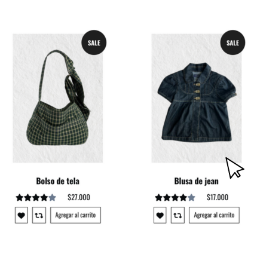

Diseño de página web
Materiales y procesos I
Natalia Alcócer

Dudou Vintage
Dudou Vintage es una tienda de ropa y accesorios vintage ubicada en Palermo, Buenos Aires, que se especializa en ofrecer piezas únicas y de alta calidad.
Destaca por su curaduría de prendas y su propuesta de decoración vintage que sumerge al cliente en una experiencia de compra única.
¿POR QUÉ DUDOU?
Escogí hacer la página web de a Dudou vintage, ya que actualmente cuentan con una página básica, que no muestra la esencia, autenticidad, ni valores de el emprendimiento.
Me pareció una oportunidad crear un sitio intuitivo que mantenga su esencia, para que puedan diferenciarse de la competencia y llegar a más personas.
Propuesta
La propuesta se basa en que la página muestre de lo que se trata la tienda con un tono auténtico, divertido y vintage.
Donde el usuario pueda explorar como lo haría en la tienda física, sin perderse de la experiencia.